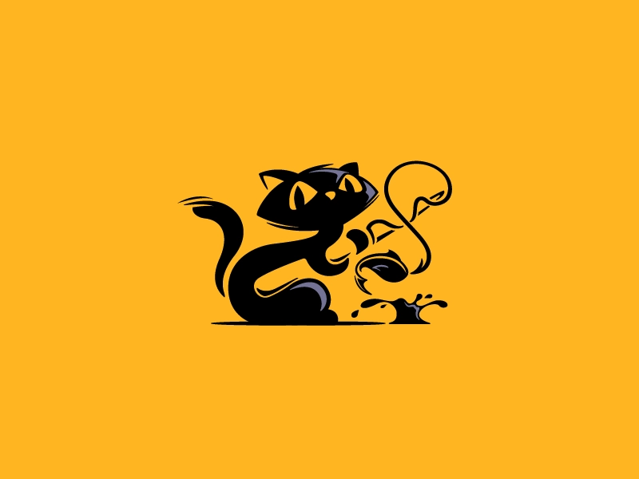

<!-- Container fluid no abarca el 100% de la pantalla y las clases de navbar son de bootstrap -->
<nav class="navbar navbar-expand-sm container-fluid">
    <!-- Clase w-100 de bootstrap es para que abarque el 100% de la pantalla-->
    <div class=" w-100">
        <!-- se hacen filas y columnas con las clases row y col de bootstrap -->
        <div class="row">
            <!-- col auto ajusta el espacio de la columna al texto, tog es una clase propia mt es margen superior -->
            <div class="col-auto">
                <button class="btn btn-outline-light tog ms-3 mt-3" type="button" data-bs-toggle="collapse" (click)="toggleSideBar()">
                    <!-- icono de font awesome -->
                    <i class="fas fa-tasks"></i>
                </button>
            </div>
            <!-- clases animated de animate.css -->
            <div class="col-auto mt-2 animate__animated animate__fadeInDown">
                <!-- Logo que descargue -->
                
            </div>
            <!-- clases animated de animate.css -->
            <div class="col-auto title animate__animated animate__fadeInDown">
                <h3>Task Manager</h3>
            </div>
        </div>
    </div>
</nav>

<!-- d-flex clase de display flex de bootstrap -->
<div class="d-flex animate__animated animate__fadeInLeft" class="sidebar">
    <!-- Router link propiedad de angular para redireccionar, routerLinkActive es para que las epstañas esten activas al seleccionarlas -->
    <!-- RouterLinkAvctiveOptions para cambiar los colores de cuando esta seleccionado, list group clase de bootstrap, my margenes en el eje 'y' clase de bootstrap -->
    <a routerLink='add' routerLinkActive="active" [routerLinkActiveOptions]="{exact:true}" class="list-group-item my-2" (click)="toggleSideBar(!sideBar)" ><i class="fas fa-plus me-3"></i>Add Task</a>
    <a routerLink='tasks' routerLinkActive="active" [routerLinkActiveOptions]="{exact:true}" class="list-group-item my-2" (click)="toggleSideBar(!sideBar)"><i class="far fa-eye me-3"></i>Tasks</a>
</div>
